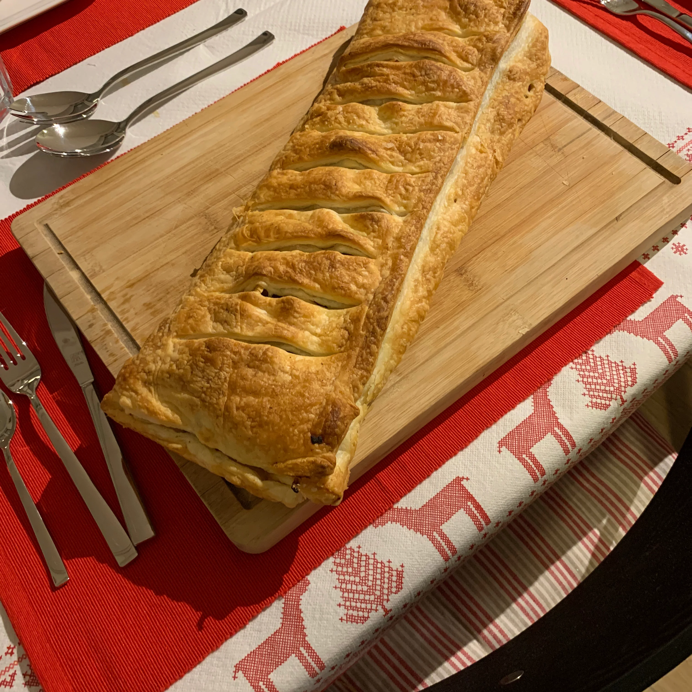

Apple strudel

Description
The oldest known strudel recipe is from 1697, a handwritten recipe housed at the Wienbibliothek im Rathaus. The filling is arranged in a line on a comparatively small section of dough, after which the dough is folded over the filling, and the remaining dough is wrapped around until all the dough has been used. The strudel is then oven-baked, and served warm. Apple strudel is traditionally served in slices, sprinkled with powdered sugar.In traditional Viennese strudel the filling is spread over 3/4 of the dough and then the strudel is rolled, incorporating the dough through the filling and making a swirl pattern when the strudel is cut across. Perhaps this is the origin of the name which means whorl or whirlpool.
Ingredients
- 1 pound sweet apples -- peeled, cored and thinly sliced
- ¼ cup golden raisins
- ¼ cup dried currants
- ½ teaspoon ground cinnamon
- 2 tablespoons white sugar
- 2 slices brown bread, crumbled
- ½ (16 ounce) package phyllo dough
- ¼ cup butter, melted
Steps
- Preheat oven to 400 degrees F (200 degrees C).
- In a bowl, combine apples, raisins, currants, cinnamon, sugar and bread crumbs. Stir well.
- Spread several sheets of pastry generously with melted butter and lay them on atop the other on a baking sheet. Spread the fruit mixture evenly over the top sheet, then roll the sheets up to form a log shape. Brush with melted butter again.
- Bake in preheated oven 30 minutes, until pastry is golden brown and fruit is tender.